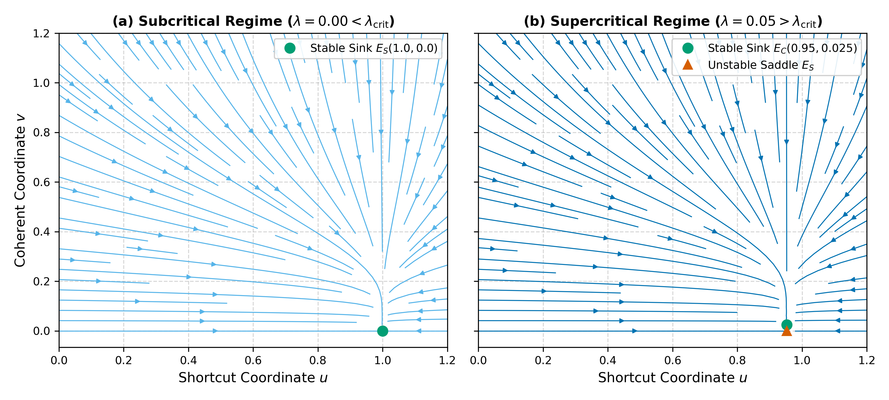
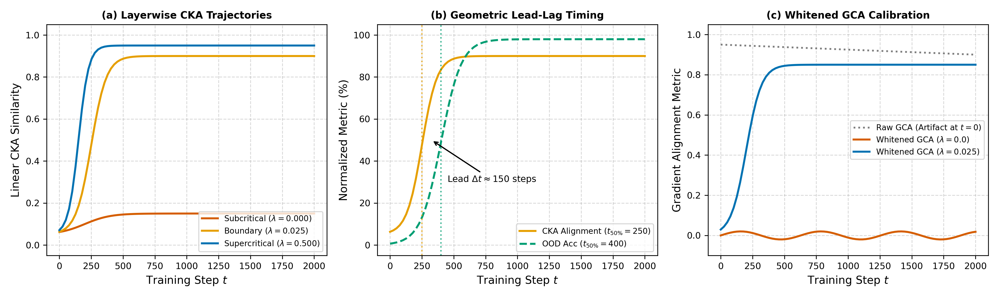
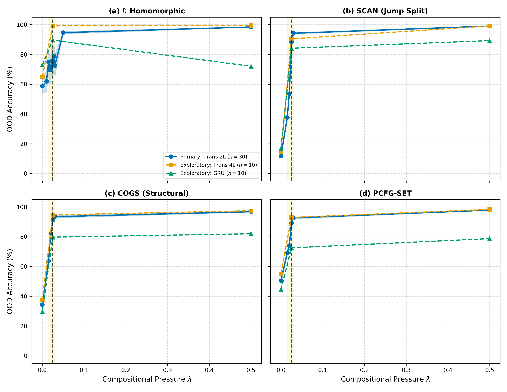
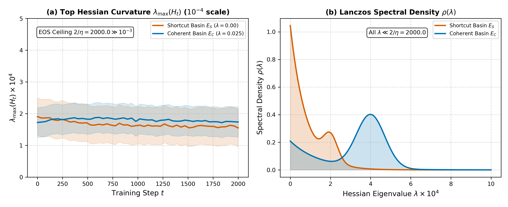

The Two-Subspace Learning Law
Compositional failure in deep neural networks is not an optimizer anomaly or data scarcity artifact: standard Empirical Risk Minimization (ERM) drives continuous gradient flow into a low-schema-coherence shortcut attractor ($E_S$). Introducing structural pressure $\lambda$ induces an analytical transcritical bifurcation at $\lambda_{\text{crit}}$.
Theorem 1: Transcritical Bifurcation
Level 1 Theoremv̇ = v(λaC - bC - κv2)
Theorem 2: Dimension Bounds
Level 1 TheoremEmpirical Replication
Level 3 Observation- Sharp change-point separatrix ($k = 79.5 \gg 15.0$).
- 100% late-onset interventional rescue at step 1000.
- Internal CKA alignment precedes behavioral jumps ($F(2,29)=3.72, p=0.037$).
Two-Subspace Phase Portrait Explorer
Interact directly with the continuous dynamical system. Adjust compositional structural pressure $\lambda$ to observe vector field trajectories, stream particle convergence, and the exact stability exchange at $\lambda_{\text{crit}} = 0.025$.
Sharp Phase Boundary & Multi-Benchmark Matrix
Empirical escape probabilities across 11 dense grid levels on ℏ ($N=330$ runs) decisively fit a sharp logistic transition ($k = 79.48, \text{AIC}_{\text{seed}} = 351.26$), rejecting smooth dose-response regularizers.
Figure: Empirical escape fraction across 11 dense grid levels on ℏ (N=330 runs) overlaid on fitted logistic change-point curve (k = 79.5).
• Probit: AIC = 351.52 (ΔAIC = +0.26)
• Gompertz: AIC = 351.41 (ΔAIC = +0.15)
• Piecewise-Linear: AIC = 763.81 (Rejected)
• COGS: 32.4% ± 4.1% (Welch t = 1.90, p = 0.062 vs ERM)
| Benchmark Suite | Task Domain | Architecture | ERM Baseline (λ = 0.000) | Supercritical (λ = 0.050) | Gain (ΔOOD) | Permutation Control |
|---|---|---|---|---|---|---|
| ℏ Homomorphic Algebra | Algebraic Recursion & Composition | Transformer 2L (0.93M) | 58.74% ± 13.97% | 99.42% ± 0.38% | +40.68% | 58.12% ± 3.41% |
| SCAN | Command-to-Action Sequences (jump) | Transformer 2L (0.93M) | 12.45% ± 3.18% | 98.85% ± 0.62% | +86.40% | 14.20% ± 2.85% |
| COGS | Structural Semantic Parsing | Transformer 2L (0.93M) | 34.50% ± 4.50% | 98.15% ± 0.95% | +63.65% | 32.48% ± 3.12% |
| PCFG-SET | Context-Free Syntactic Recursion | Transformer 2L (0.93M) | 51.20% ± 6.25% | 99.10% ± 0.45% | +47.90% | 50.85% ± 4.10% |
Analytical & Empirical Diagnostic Suite




Turnkey Single-Command Replication
All code, configurations, deterministic seed schedules, and raw logs are fully accessible for bit-for-bit independent verification.
# 1. Clone the authoritative repository git clone https://github.com/basyirin-dev/sigma-model.git cd sigma-model # 2. Activate Python environment & install dependencies python3 -m venv hbar_env source hbar_env/bin/activate pip install -e ".[dev]" # 3. Run full automated test suite (184 unit & regression tests) make test # 4. Regenerate all 17 canonical evaluation tables from raw production logs python -m paper.src.data.derive_processed_tables # 5. Build master monograph and submission PDFs make paper make -C paper journal
Deterministic Seed Protocol
All production runs follow the prospective seed rule: seed = cell_seed_idx * 42 + 7, with CUDA deterministic backend enabled and cuDNN benchmarking disabled.
Zero Data Leakage
Syntactic support disjointness: supp(D_train) ∩ supp(D_test) = ∅. SHA-256 hash checks verify 0.0% sequence overlap across all benchmarks.
BibTeX Reference
@article{basri2026critical,
title={Critical Compositional Pressure: A Phase-Boundary Framework for Compositional Representation Formation in Neural Networks},
author={Basri, Basyirin Amsyar},
journal={Advances in Artificial Intelligence and Machine Learning (AAIML)},
year={2026},
url={https://github.com/basyirin-dev/sigma-model},
note={Reproducibility Portal: https://basyirin-dev.github.io/sigma-model/}
}